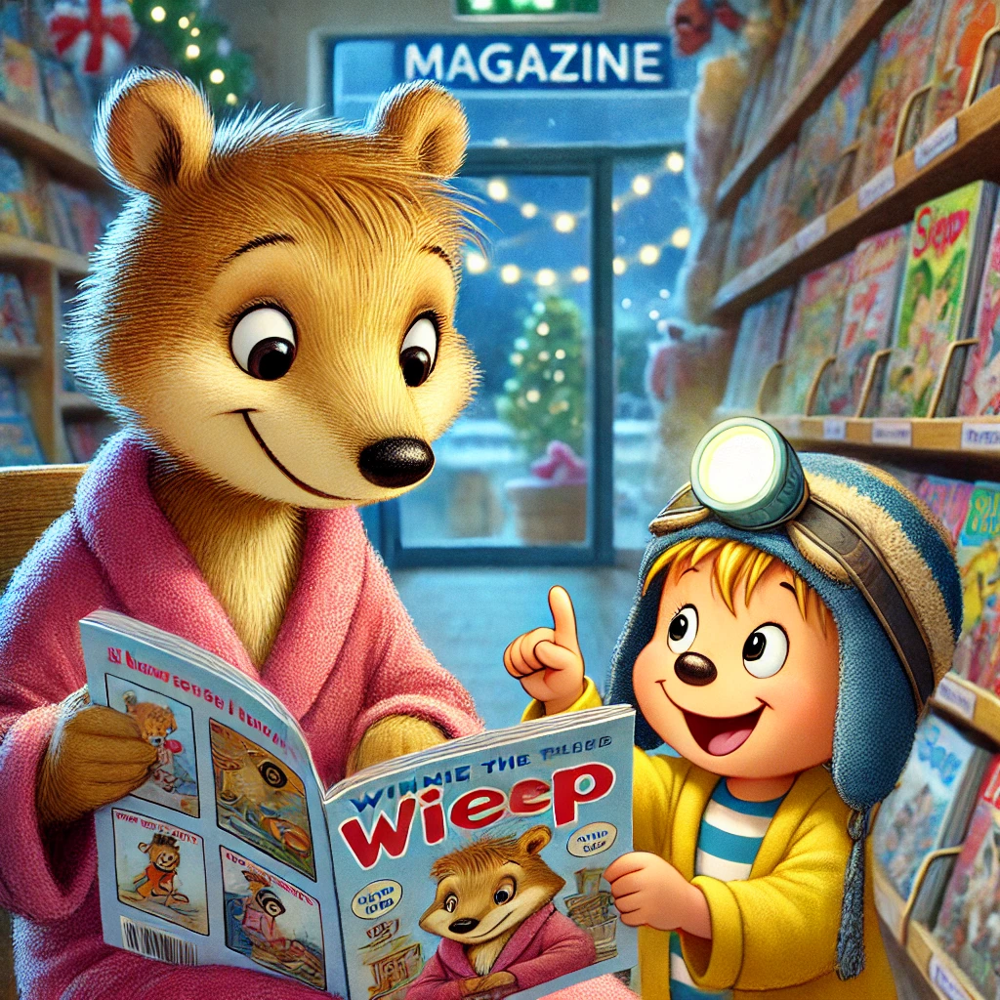

Es war einmal ein Wiesel namens Winnie, das oben auf dem Knabbereienregal eines Supermarkts in Leknes auf den Lofoten wohnte. Eines Tages kam Winnie ein wenig niedergeschlagen bei Biep an.
"Welche Laus ist dir denn über die Leber gelaufen, Winnie. So habe ich dich ja noch nie gesehen!" rief Biep. Winnie wollte erst nicht so ganz damit raus rücken, sagte aber schließlich: "Ich habe eben Chips mit Erbsengeschmack erwischt. Erbsengeschmack! Kannst du dir das vorstellen. Ekelhaft. Und das schlimmste ist, dass ich mich gar nicht so sehr über den Geschmack aufrege , sondern vielmehr darum, dass ich dummes kleines Wiesel nicht lesen kann. Dann wäre das alles nicht passiert." Winnie seufzte schwer und rutschte ein wenig tiefer auf ihrem Kerzenstuhl, sodass ein wenig ihres dicken Kugelbauchs unter ihrem Pullover hervorlugte.
Biep runzelte die Stirn: "Aber Winnie, du bist doch kein dummes Wiesel. Lesen kannst du doch lernen. Das hat doch rein gar nichts mit dumm zu tun." "Meinst du? So habe ich noch nicht darüber nachgedacht. Biep, kannst du denn lesen?" Biep kicherte: "Naja, ich lese hauptsächlich Barcodes, aber ja, ich kann lesen und ich bringe es dir gerne bei."
So wurden die beiden Stammgäste im Zeitschriften Regal. Winnie liebte die Comic-Hefte dort. Viele Bilder und wenig Schrift schienen ihr das perfekte Startmaterial zu sein. Biep war ein hervorragender Lehrer und Winnie wurde schnell besser!
um Dank brachte Winnie zu ihrem nächsten Treffen eine Tüte Chips mit. Stolz sagte sie: "Hier, Biep, das sind Meersalz Chips mit Essig. Deine Lieblingschips."